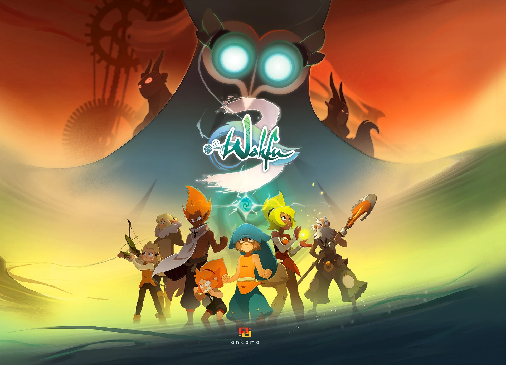

Bienvenue sur ce site où vous trouverez toutes les informations sur l'univers du Krosmoz et plus particulièrement de Wakfu

Wakfu est à la base une série d'animation française sortie en 2008 produite par Ankama animation. Cette série comporte pour l'instant 3 saisons, la 4ème étant prévu pour décembre 2023.
Pour une entrée en matière voici le Générique de l'animé Wakfu: